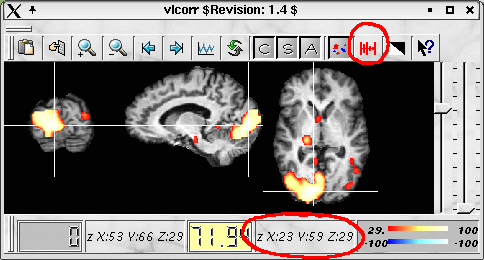
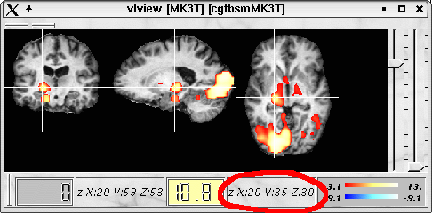
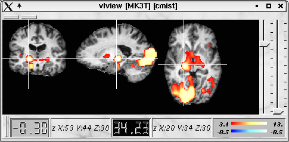
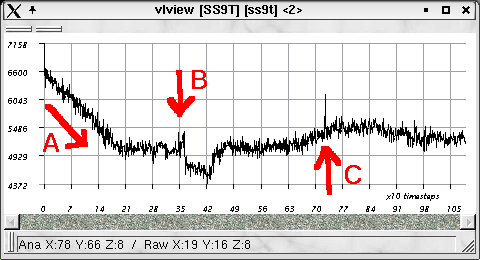

A correlation analysis of fMRI time series can be performed
using 'vlcorr'. The anatomical and functional data set has to be specified using the
command line options '-in' and '-raw', respectively.
Anatomical and raw data must match.
'vlcorr' gives correlation values for a single subject only.
For statistical significance and group studies, the
correlation analysis has to be performed using 'vcolorglm' (see 'vgetcovariates' section below).
vlcorr -in ana.v -raw tbsmMK3T.v
In the following example, correlation analyses was performed
with reference voxel 23 59 29 (raw data voxel coordinates).

A correlation analysis can also be performed using 'vcolorglm' or
'vwhiteglm'.
The appropriate design file can be created with 'vgetcovariates' using
preprocessed fMRI raw data. When a special region is chosen
(by specifying the coordinates), the program 'vgetcovariates' produces
a simple design file with a regressor. The regressor contains
the time course of the selected voxel (or the average time course
of the selected voxels and neighbouring voxels, if specified).
To select the reference voxel, the program 'vlview'
can be used. Make sure that the same type of coordinates are selected
in 'vlview' and 'vgetcovariates'
(e.g. voxel coordinates). The procedure is as follows:
vlview -in mr413_t1_pl.v -zmap zmap.v -raw tbsmMK3T.v

vgetcovariates -in tbsmMK3T.v -out design.v -addr 20 35 30
vcolorglm -in tbsmMK3T.v -out gtbsmMK3T.v -design design.v
vgetcontrast -in gtbsmMK3T.v -out cgtbsmMK3T.v -con 1 0
In our example, the result is the following:

Instead of 'vcolorglm', 'vwhiteglm'
can be also used to perform a correlation analysis in the following way:
vgetcovariates -in tbsmMK3T.v -out design.v -addr 20 35 30
vwhiteglm -in tbsmMK3T.v -out ctbsmMK3T.v -design design.v -con 1 0
In Lipsia, the PPI is realised as it was developed by Friston et al. (1997). The event-related
PPI-approach (by Gittelman et al.) is not implemented in Lipsia.
A PPI (psychophysiological) analysis can be performed by specification of an
additional psychological variable (e.g. attention). This psycological variable
has to be specified in a one-column text file (e.g. with 1 for attention and
-1 for no attention).
The number of rows (items) must coincide with the number of
timesteps of the experimental session. If no value is availabe for a timestep,
the line can be filled with a capital X in the text file.
In the columns of the text file (which specifies the psychological variable),
there should be always at lest 3 consecutive entries of '1' or '-1', respectively, because (in Lipsia) the PPI is working only between
'blocks' of conditions and not for short 'events'.
vgetcovariates -in tbsmMK3T.v -out design.v -addr 20 35 30 -regr psycho.txt -ppi true
Now either
vcolorglm -in tbsmMK3T.v -out gtbsmMK3T.v -design design.v
vgetcontrast -in gtbsmMK3T.v -out cgtbsmMK3T.v -con 0 0 1 0
or
vwhiteglm -in tbsmMK3T.v -out ctbsmMK3T.v -design design.v -con 0 0 1 0
'vgetcovariates' is able to generate an output as text file if '-outtype txt' is specified.
This feature can be used if a design was already generated with 'vgendesign'. Then
the PPI covariates must be appended to the existing design file. In this procedure,
conditions and the PPI covariates can be specified in a single design matrix:
vgendesign -in design1.txt -out design1.v -tr 2 -ntimesteps 648
vgetcovariates -in tbsmMK3T.v -out design2.txt -outtype txt -addr 20 35 30 -regr psycho.txt -ppi true
vaddcovariates -in design1.v -out design_add.v -file design2.txt
Now either
vcolorglm -in tbsmMK3T.v -out gtbsmMK3T.v -design design_add.v
vgetcontrast -in gtbsmMK3T.v -out cgtbsmMK3T.v -con 0 ... 0 1 0
or
vwhiteglm -in tbsmMK3T.v -out ctbsmMK3T.v -design design_add.v -con 0 ... 0 1 0
Reference for PPI analyes: Friston KJ, Buechel C, Funk GR, Morris J, Rolls E, and Dolan RJ (1997).
Psychophysiological and modulatory interactions in neuroimaging. Neuroimage 6, 218-229.
A group statistic can be performed on the basis of individual
contrast images. In this case, the input images must be contrast images of individual
subjects that are registered and normalized.
Contrast images are obtained by applying 'vgetcontrast' or 'vwhiteglm' with the option '-type conimg'.
Correlation and PPI analysis might give useless results when the raw data of the
selected voxel contain (A) drifts, (B) steps, or (C) spikes. Most of drifts can be removed using
a temporal high pass filter in 'vpreprocess'. However, steps and spikes can not be removed.
